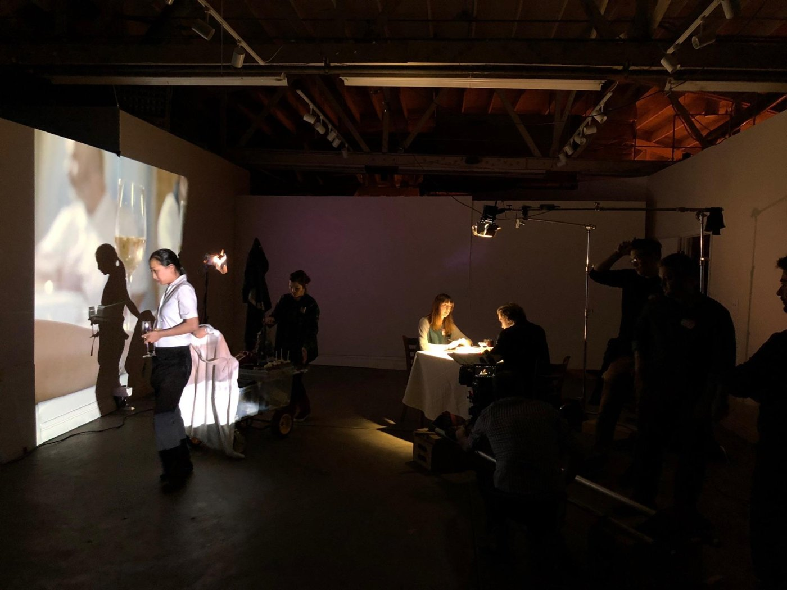
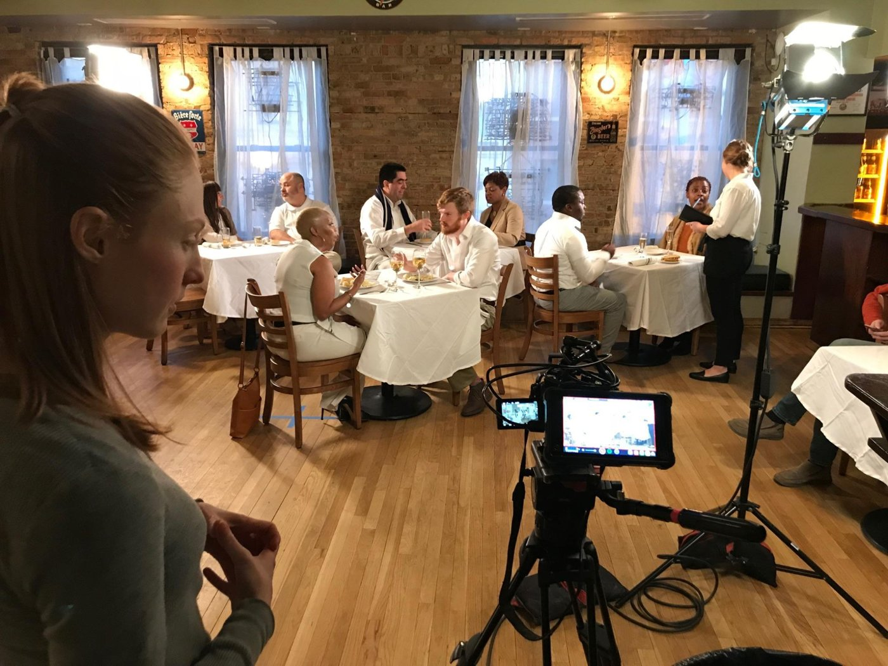
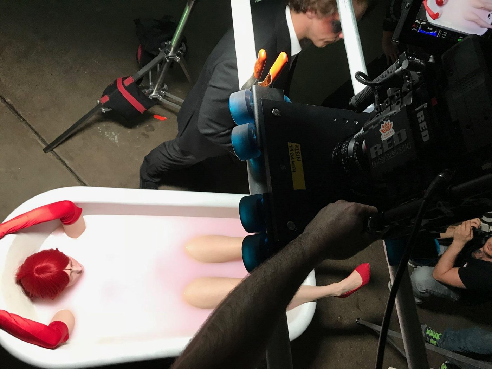
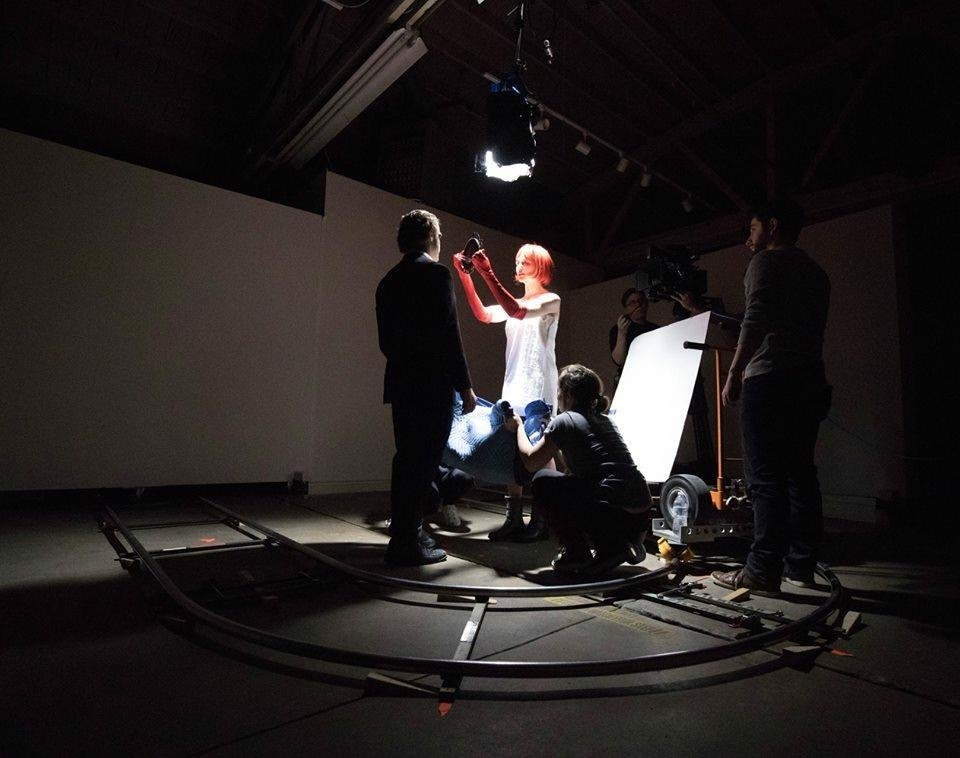
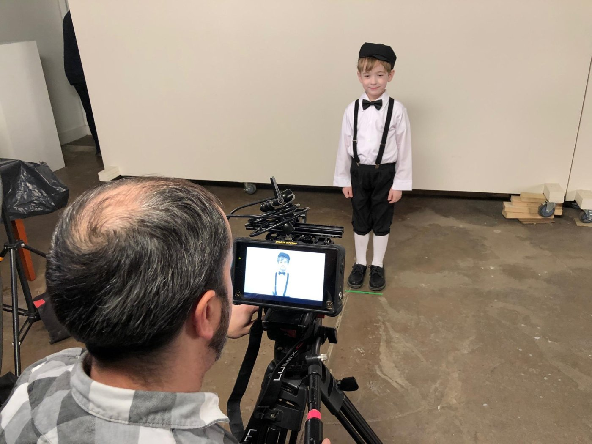

Emily Bennett, writer, director, and lead actor of the surrealist, body horror short LVRS, has been making art for awhile. She's shown work in countless festivals internationally, written prolifically, and is now acting alongside Ethan Hawke in a “supernatural” episodic radio show. As I came to find out in our conversation, she is even making things in her sleep. LVRS, with its distinctive color palette and evocative imagery, sticks out in your memory long after watching. Bennett gave me a look into the creative process that preceded October's Nitrate screening, and an audience of New Yorkers in audible squeamishness.
T: LVRS is from 2019, which is quite a while ago. What's it like to return to this project and have it screen, given the time gap?
E: It's shocking it's that long ago, but it does feel like a different lifetime in a way. LVRS was one of my first short films that I've ever created. It was created after getting out of a relationship that was quite difficult and damaging. I was right to finally get out of that relationship but basically, that night I had a nightmare—
T: Mm.
E: —and instead of being horrified when I woke up, I was inspired and said, “I want to create this.” The film is my clearest way of conveying the nightmare to an audience.
It wasn't some kind of high-minded goal to create something very artistic and surreal. It was literally trying to be as accurate to my nightmare as I could.
So yeah… It's crazy to know that it was that long ago, but I'm still very proud of it, and I think the themes at the heart of LVRS are evergreen, sadly, because people do go through very damaging relationships. Hopefully, they can find recognition and some kind of comfort through the difficult but honest story in the film.
T: It's so interesting to hear that it comes from a dream, because I felt that you whittled the story down into the strange intensity of what the experience is like internally, which reminded me of how in dreams, our unconscious is able to do sort of exactly that. I can just imagine that creating a short film with the goal of accuracy to a dream would be difficult. Would you say that one of the biggest challenges was creating the spaces – the physical sets?
E: Yeah, for sure. No, that was difficult. At first I actually scouted a bunch of real homes, trying to find a bedroom. I was scouting actual locations and thinking of shooting outside when the clouds are all around her, and shooting in a church when she appears in a church.
And I say “she”—I play the character, but if I'm directing, I always refer to the people on screen as “she,” “them,” “he.”
But yeah, I scouted real locations, and then I realized that dreams are kind of projections within projections of our concept of the world. And so I ended up finding this really cool gallery space in Chicago, and I used to live in Chicago, I love Chicago. I actually realized I could shoot the real locations and project them into the gallery, and by doing that, I could go to all of these locations in a way, but also keep the main character very confined to the world and the relationship that she's in. It not only made, you know, the production days easier, but I think artistically it felt more accurate as well, so that was nice.
Dreams are kind of projections within projections of our concept of the world.
T: That definitely comes across. It's like suffocating within one room while the outside world plays around you. You're participating in the outside world but removed from it at the same time.
E: Exactly.


T: I also love the idea of the partner with the mirror on their face reflecting back a happier version of yourself that isn't actually what you're feeling. This visualization of gaslighting that I'd never seen before, and which definitely recontextualized some things for me about what gaslighting is like. Where did that come from?
E: My dreams are so bizarre… this one in particular. But yeah, that mirror-face man was in my dream. And the funny thing is, someone later told me, “Oh, you must have gotten that from Maya Deren's Meshes of the Afternoon (1943),” which is a brilliant black-and-white silent short film made long, long, long ago. I had never seen that film when I made mine. Maybe I saw images of something. She uses a mirror-mask person in that short film in kind of a different way. I, again, had never seen that film, but I'm honored to be compared to her at all.
But that guy appeared in my dream, and it was a very unnerving feeling in the dream because I knew I wasn't smiling, and yet when I looked at him, I saw that I was smiling. And so in the dream I remember crying, but looking at him—and at my reflection by looking at him—and I was smiling back at myself, and it was the most horrible, unnerving feeling, 'cause I was like, “I know I'm not feeling that, and I have to get away from you to be able to honor what I know I feel, because I can't trust what you're showing me.”
And in the dream there were no words. I think sometimes dreams are so much wiser than waking thoughts, and they can tell you things that are a bit beyond words or take many, many words to explain. But that image, to me, I was like, “That is exactly what this relationship felt like.”
I think sometimes dreams are so much wiser than waking thoughts.
T: Yeah, that's what I was just gonna ask. Did it illuminate things for you in your healing process after the breakup?
E: Yeah. Weirdly, it made everything, like, super clear.
T: That's convenient.
E: Mm. Yeah. And I mean, obviously, I undertook the whole process of creating the film and submitting it, you know, and playing festivals. And still playing. I'm so glad that people still want to screen it and show it. But emotionally coming to an image like that that felt so honest and yet weirdly universal. That was a really important moment for me, and it really helped me heal, for sure.
T: Among many others, I imagine. Playing it in a horror-themed short block, as we did, and I've seen it play in other horror spaces, like horror festivals… it's interesting because it is the horror of being in a toxic relationship that so many people experience. You know, it's not like you have to fantasize up a monster in a fantasy town. It's just the horror of life, of a particular experience in life that a lot of us unfortunately experience. What has it been like to receive feedback as you've been showing it? Are you getting into lots of conversations with people, maybe particularly women, that are intense for you?
E: It's been really great, actually, because like I said, I wasn't able to put my own experience into words, or at least I didn't put them into words for this film. I think by making it silent, it ended up playing all over the world because there's no language barrier. So I think it became a bit more universal because of that. You don't need to read subtitles. The only line that repeats is “I love you.” Once you know that word, and once you know that phrase, it just repeats, so in any language, I feel like they're just like, “Oh, yes, it's ‘I love you.’”
But the conversations I got into were really deep conversations with strangers kind of immediately, and that was really wonderful. I think because I share myself in the film so completely—I'm writer, director, and the actress in it—I think they felt comfortable because, obviously, I'd been through something enough to have created this work. That was really nice. There wasn't a need to be like, “How's the weather?” We could kind of just immediately be like, “Yeah, relationships are crazy, right?”
It just became really beautiful, welcoming, healing relationships and conversations with a lot of people. Men and women.
T: I mean, that is so ‘art for healing,’ like, why we do this type of thing. Ya know?
E: Definitely.

T: I'm curious about having these conversations in different countries. Did you notice differences between different cultural takes on the pain of toxic relationships? Or just, like, relationships in general? I don't know if you subscribe to that term. Were you surprised by a universality, or were there some cultural distinctions?
E: That's a good question. I feel like my conversations with Americans and North Americans, mostly women were… It was odd. The relationships seemed slightly more insidious and almost like more purposeful in the…
T: Malicious intent?
E: Yeah, that. Really well said. It felt that way, and maybe that's because that's most of the conversations I ended up having.
But I feel like when it played in Europe, it was a bit more of an emotional response, whereas in the States it felt much more like aftermath and trying to put it into psychology and trying to reason after the relationship, if that makes sense.
Maybe it's my own—you know, I'm born and raised in America, and I tend to psychoanalyze and really try to put into logical terms things I've been through. I try to psychoanalyze myself, for better or for worse. And I feel like maybe that's culturally very American.
Which is interesting. It's not to say it's good or bad or better. But the good thing about LVRS was that I allowed myself to not lead with the psychoanalysis or my attempt at psychoanalytics. It really was just coming straight from my gut. And I think that's why it's good.
When I overthink and I'm trying to be really smart about creating something, it tends to fall apart more easily. So I think I find the best results in my work and in my emotional life by trusting the subconscious, the gut.
T: I can imagine all the conversations that you've had surrounding this short, especially being one of your first shorts, informed a lot about your future artistic process and maybe even just the way you go about the world. Not to get too personal—
E: Yeah. No, no, it really was, and I think I work out a lot of things through my work. And I think that's where horror really shines above a lot of other genres sometimes, because we can really put on screen and share with others what truly, truly terrifies, horrifies, disturbs us.
And they don't all have to be the most horrific things we've ever seen, but I think the act of sharing those things, those very vulnerable things, is really lovely. I think we can unburden ourselves.
I've found that I can unburden myself of baggage by honestly creating the thing that is harming me, putting it on screen and sharing it. I find it takes the power away from it in my life, and it actually is very freeing. So LVRS was the start of doing that.
I've found that I can unburden myself of baggage by honestly creating the thing that is harming me, putting it on screen and sharing it.
T: I saw Bed by you as well. What about being the star of these stories? Do you ever have the desire to distance yourself a bit by casting someone else to play the main character?
E: Yeah, and I plan to do that in my next films. My second feature just came out this year, it's called Blood Shine. It's currently streaming on Amazon and Apple TV. Check it out.
T: Hell yeah.
E: And I star in that one as well, but I plan to not do that moving forward. I love acting. I will always act. But I'm really excited to step away and just fully be with my other actors and show up to set in jeans and a baseball cap, and not have to sit in the makeup chair, and tell stories that way. I'm excited to move into that era.

T: Okay. New era. Awesome. Ok, speed last question. Do you have any surrealist media, or media about relationships, that you recommend?
E: Hmm. Oh my gosh. I really enjoyed Lynne Ramsay's Die My Love recently. I thought that was really beautiful and unnerving. I really enjoyed that one. I always come back to David Lynch, though.
T: Yeah. I mean, the dream stuff is all there.
E: Love him. Oh, yeah. Because of LVRS and a lot of my other work, a lot of people have compared me to him, which is the greatest honor in the world.
But I will say, just specifically about surreal impressions of damaged relationships, you really have to do a double bill of Lost Highway and Mulholland Drive.
T: Okay.
E: They are the Mack Daddy and Mack Mommy of that kind of genre.
T: Which is the Mack Daddy and which is the Mack Mommy?
E: Daddy is Lost Highway. Mommy is Mulholland Drive, for sure.
T: Got it. Love. I haven't seen Lost Highway yet, but I'm a huge David Lynch fan, so I'll be doing that definitely.
E: Lost Highway—it is crazy. It is so weird. Oh my gosh, I'm so jealous of you. You get to watch it for the first time. It's crazy.
T: I'm excited. All right. Well, thank you for your time. And, maybe I'll see you at the next Nitrate.
